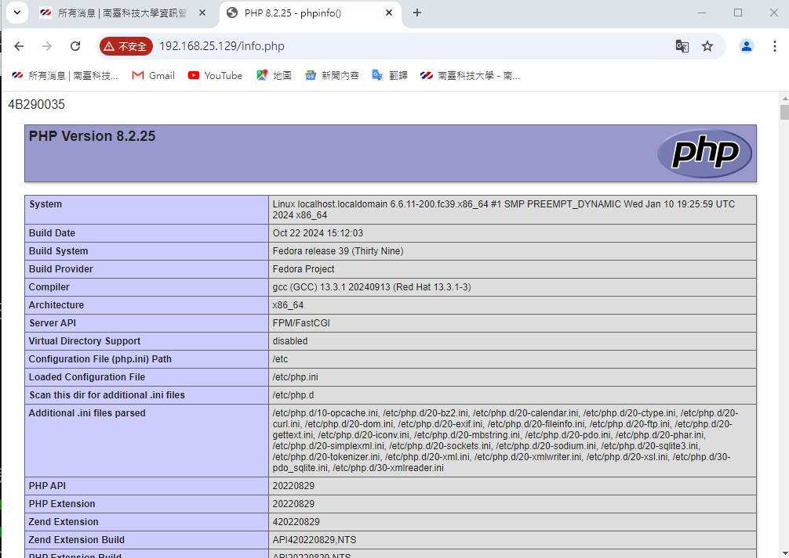
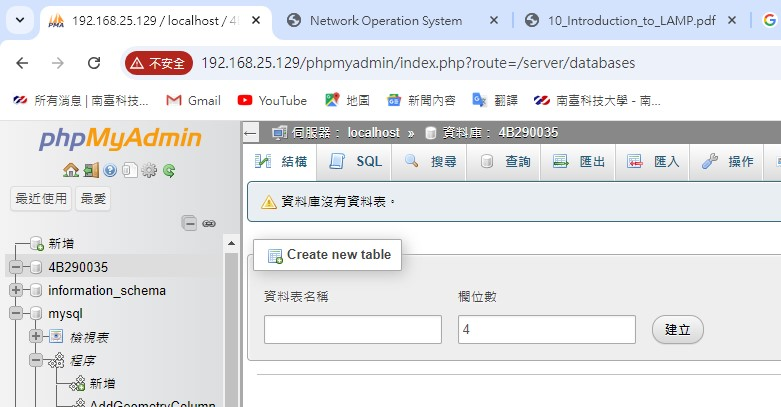
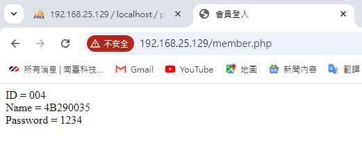

左邊是溫水佳樹聽到你的NOS成績時的表情
左邊是溫水佳樹聽到你的NOS成績時的表情接下來則是設立LAMP四件套的A、M、P了。A則是代表網頁代理伺服器Apache；M則是代表資料庫管理系統MySQL；P則是開源程式php。
1.以下是Apache伺服器設置成功後，透過Windows中的Chrome瀏覽器運行的頁面

2.以下是Apache伺服器運行成功後，透過info.php所展示的畫面成果(須確認包含網頁內的所有檔案存放路徑、端口映射、防火牆是否正確設置，以及軟體是否正常安裝)：

3.安裝完Apache及php後，就是要繼續安裝LAMP中的"M"，就是"MySQL"(現稱"MariaDB")的相關組件。因為該資料庫查詢軟體是剛裝的，因此尚無任何資料，以下為它的截圖：

4.我們來模擬一個登入畫面，當使用者HTML來透過使用者的名稱及密碼登入網站時，網頁會向Apache伺服器端發送登入請求，這時Apache會向MySQL查詢該使用者在登入頁面所輸入的鍵值，若這些資訊剛好跟資料庫符合，則讓使用者登入並顯示它的ID、Name以及Password。

這次對我來說比較實用，既能直接學會架設網頁端代理伺服器，也能開始接觸網頁方面的資料庫查詢的相關知識。